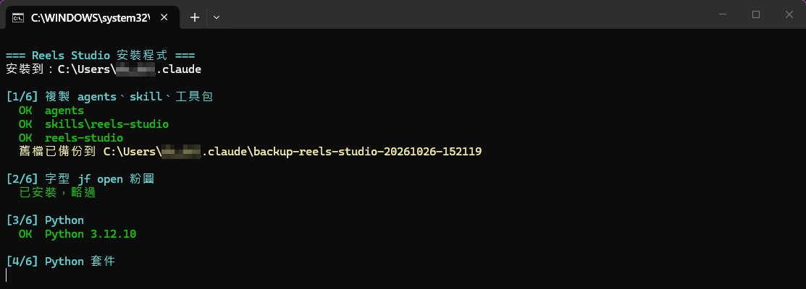
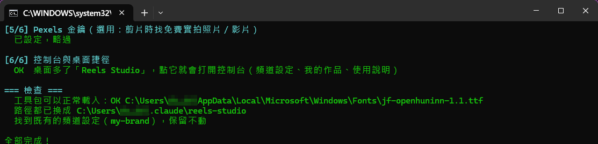
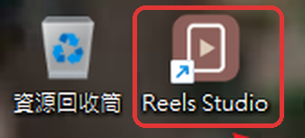

短影音小幫手 安裝說明
讓 Claude 幫你把錄音、影片，或一個還沒錄的想法，做成直式短影音（IG Reels／TikTok／YouTube Shorts），字幕、插圖、貼文文案一起準備好。


做出來的影片長這樣，點一下會在 YouTube 播放。
每做完一步，就點左邊的圓圈打勾。這台電腦的瀏覽器會記住你勾到哪裡。
0安裝前，先確認
- 需要可以使用 Claude Code 的方案。
之後每做一支影片：成品約 15–30 MB，加上約 30–50 MB 的工作檔（有用實拍素材會多一些；影片做好後，素材資料夾裡的 _reels_work 可以刪掉）。錄音和影片素材本身可以放在任何一顆硬碟。Python 和需要的套件 約 0.4 GB 語音辨識模型（第一次聽打時自動下載，只要一次） 約 1.6 GB 安裝過程的暫存檔、做前幾支影片的空間 約 1 GB 合計 約 3 GB 怎麼看還剩多少空間？按 Win + E 打開檔案總管，點左邊的「本機」，C 槽下面會寫「可用 ○○ GB」。- 安裝時要下載 Python 和套件，第一次聽打還會下載約 1.6 GB 的語音辨識模型。
- 可略過 讓影片穿插免費的實拍素材。沒有也完全可以用，畫面會全部用插圖。兩個可以只申請一個，也可以都申請：
- Pexels：照片和影片都有，不強制標註。到 pexels.com/api 免費申請。
- Unsplash：只有照片，用了的話發文時必須標註攝影師（發文包會幫你把標註寫進文案）。到 unsplash.com/developers 註冊、建立一個 App，複製「Access Key」。
1安裝
- 在壓縮檔（.zip）上按右鍵 → 「解壓縮全部」，放在哪裡都可以（例如桌面）。⚠️ 不要直接在壓縮檔裡面點兩下那樣安裝會失敗。要先解壓縮，再打開解壓縮出來的資料夾。
- 在解壓縮出來的資料夾裡，就在這份說明的旁邊（有些電腦會顯示成 ② 雙擊安裝.bat）。會跳出一個黑色視窗，畫面上的字會顯示進度。

安裝中的畫面長這樣：會依序跑 [1/6] 到 [6/6]。路徑裡會是你自己的使用者名稱。 如果出現藍色的「Windows 已保護您的電腦」點 「其他資訊」，再點 「仍要執行」。這是 Windows 對所有從網路來的檔案都會跳的提醒。 - 「要自動安裝 Python 嗎？(Y/n)」：直接按 Enter 就是要。它會從 Python 官方網站下載，只裝給你自己，不需要管理員權限，約 1–3 分鐘。
- 「請貼上 Pexels API 金鑰」、「請貼上 Unsplash Access Key 金鑰」：有金鑰就貼上（按右鍵就能貼上，畫面不會顯示是正常的），然後按 Enter；沒有就直接按 Enter 跳過。
- 按任意鍵關掉黑色視窗。

看到最下面綠色的「全部完成！」就成功了。版本號這類細節可能跟你的畫面有一點不同。 出現黃色或紅色的問題清單？照畫面上的提示處理，再雙擊一次 ② 雙擊安裝 就好。重複執行不會弄壞東西。 - 之後點這個圖示就能再打開控制台（控制台右上角也有這份說明）。沒看到的話，見最下面的「常見問題」。

桌面上紅框裡的就是 Reels Studio 圖示。 - 這樣 Claude 才會認得剛裝好的小幫手。
2建立你的風格
設定一次，之後每支影片都會自動套用。全部在控制台用點的就好。
- 點桌面的 Reels Studio 圖示就會打開。
- 會出現在影片上方的小標籤和結尾卡。
- 前五種版面風格是快速套版，點一個就會自動出樣張（右邊）。不想跟別人的影片撞款，選「自由創作」，用自己的話寫下想要的感覺（例如「深色、慢慢的、像深夜電台」）或喜歡的帳號，Claude 每支都會照這個方向自己設計。「版面規則」可以關掉開頭標題卡或結尾卡、改字幕位置和大小、選節奏快慢；配色也有深色背景可以選。
- 結尾卡可以選圖示、按鈕文字和下面的小字，例如「每週三更新」。
- 可以之後再補 文案語氣、目標觀眾、固定 hashtag 這些。點灰色的小按鈕就能快速填入。
- 看到綠色的「已儲存 ✓」就完成了。之後想改，回來改完再儲存一次就好。
不想用控制台？讓 Claude 一題一題問你
- 在 Claude 開新的對話，輸入 /reels-studio，或直接說 幫我做 reels。
- 回答 Claude 的問題：頻道名稱、內容類型、配色、想要的影片感覺、版面風格（快速套版或自由創作）、要不要標題卡和結尾卡、節奏、字型、文案語氣、結尾想讓觀眾做什麼、固定 hashtag。
- 看它做的樣張，不滿意就用一般的話講，例如 換成藍色 換字型 結尾寫「每週三更新」。
結果跟用控制台設定一樣。想重來，說 重新設定品牌 就可以。
3做第一支影片
- 錄音檔（mp3、m4a）或影片檔（mp4、mov）都可以。還沒錄也沒關係，可以先請 Claude 幫你寫稿。
- 按「選擇資料夾⋯」選它，就會看到做到哪一步。
- 可略過 不選的話就用預設風格、做 3 支。
- 句子裡已經寫好資料夾和風格，不用再另外說明。長的錄音要先聽打，可能要 30–60 分鐘。
- Claude 挑好精華片段後，回到「做影片」，在「選片段」這一步勾選、改標題，按「確定要剪這幾段」，再把下面那句話複製貼給 Claude。短影片沒有這一步，可以直接打勾。
- 在「做影片」就能播放。Claude 沒辦法真的「聽」聲音，字幕有錯直接跟它說。
- 照「做影片」的下一步請 Claude 寫文案、整理發文包，再到 IG／TikTok 自己發文（Claude 不會登入或代發你的帳號）。
4平常怎麼用
| 你手上有 | 跟 Claude 說 |
|---|---|
| 一段很長的錄音或影片（Podcast、訪談、講座、直播） | 幫我把這個檔案做成 3 支 reels 它會先聽打、挑出精華讓你選，再開始剪。 |
| 一支自己拍的口播或 vlog | 幫我剪這支 會保留你的畫面，自動剪掉停頓，加上字幕和插圖。 |
| 一篇文章或一個想法 | 幫我把這篇寫成 reels 口播稿 寫好稿你照著錄，錄好再說 錄好了，幫我剪。 |
| 已經剪好的影片 | 幫我寫文案 幫我整理發文包 |
5小提醒
- 剪一支大約要 10–30 分鐘（有露臉的影片比較久），可以同時剪 2 支。這段時間電腦可以做別的事，但不要關機。
- 第一次聽打會先下載語音辨識模型，會特別久，之後就快了。
- Claude 沒辦法真的「聽」聲音，成品請自己完整看一遍，字幕有錯直接跟它說。
- 發文要你自己操作，Claude 不會登入或代發你的帳號。
- 輸入 /reels-studio 這種斜線指令時，同一則訊息裡不要放網址；有連結的話，用一般句子講就好。
?常見問題
跳出「找不到需要的檔案」，或黑色視窗一閃就不見了
通常是還在壓縮檔裡面執行。請先「解壓縮全部」，再到解壓縮出來的資料夾雙擊 ② 雙擊安裝。
Python 自動安裝失敗
到 python.org/downloads 下載 Python 3.13 自己安裝。安裝畫面第一頁一定要勾選「Add python.exe to PATH」，裝好之後再雙擊一次 ② 雙擊安裝。
安裝時跳過了 Pexels 或 Unsplash 金鑰，之後想加
按鍵盤的 Win，搜尋「PowerShell」並打開，貼上下面這行（把「你的金鑰」換成真的金鑰），按 Enter，再重開 Claude。
Pexels：
setx PEXELS_API_KEY "你的金鑰"Unsplash：
setx UNSPLASH_ACCESS_KEY "你的金鑰"輸入 /reels-studio 沒有反應
確認安裝最後有出現「全部完成！」，而且有把 Claude 桌面 App 完全關掉再打開。還是不行的話，直接說「幫我做 reels」試試看。
我的風格設定存在哪裡？可以自己改嗎？
在 C:\Users\你的名字\.claude\reels-studio\my-brand\。裡面的 brand.json 是配色、字型、結尾卡；BRAND.md 是文案語氣和 hashtag。最簡單的方式是在控制台的「風格」分頁修改，或直接跟 Claude 說你想改什麼。控制台只會改你動過的那幾項，Claude 依你的要求記下的其他規則不會被洗掉。
我有好幾個頻道或帳號，怎麼分開設定？
在控制台的「風格」分頁按 「＋ 新增風格」，輸入名稱，選「從空白開始」或「沿用某個風格的配色、字型、版面風格和結尾卡」，建好後照平常一樣填寫、儲存。之後在「做影片」打開素材資料夾，再用右上角的「目前風格」選它，這個資料夾就會改用那個風格，Claude 和剪片程式都會自動套用。沒有選的資料夾會用預設風格。
不要的風格：用右上角的「目前風格」選它，在「風格」分頁按 「刪除這個風格」。它會移到資源回收筒，刪錯了可以從那裡還原。預設風格不能刪除。
點桌面的 Reels Studio 沒有反應
等 5 秒左右，瀏覽器應該會自己打開。如果還是沒有，直接跟 Claude 說「打開控制台」。控制台只在你自己的電腦上執行，不會上傳任何東西；關掉分頁 15 分鐘後它會自己結束，也可以按右上角的「關閉」。
怎麼知道有沒有新版？
每次打開控制台，它會連到 Reels Studio 的 GitHub 頁面看最新版是哪一版（只讀版本號，不會傳送你的設定或檔案）。有新版時，控制台最上面會出現提示，照著按「下載新版」、解壓縮、雙擊「② 雙擊安裝.bat」就好。沒有網路的話不會檢查，也不影響使用。已經是最新版時，控制台最下面的版本號旁會寫「已是最新版」。
重新安裝會不會把我的設定洗掉？
不會。重新安裝只會更新程式，你的風格設定會保留；被替換的舊檔也會先備份到 .claude\backup-reels-studio-日期時間\。
!使用須知與免責聲明
- 成品請自己檢查：逐字稿、字幕、精華片段和貼文文案都是 AI 產生的，可能有錯字、聽錯或斷句不對。發布前請完整看過影片、讀過文案。
- 哪些資料會交給 Claude：聽打在你自己的電腦上執行；但逐字稿、文案，以及剪片時用來檢查畫面的截圖，會在對話中交給 Claude（Anthropic）處理，適用 Anthropic 的使用條款與隱私政策。含有不公開內容的素材請自行斟酌。
- 素材的權利由你負責：請確認你有權使用錄音、影片、照片與音樂，來賓或入鏡的人同意公開，並遵守 Pexels／Unsplash 素材授權（Unsplash 照片發文時必須標註攝影師）和各社群平台的規範。
- 安裝會改動這台電腦：會下載安裝 Python 與套件、安裝字型、寫入 .claude 資料夾，選填的 Pexels、Unsplash 金鑰會存成使用者環境變數。
- 請確認來源：只有從 Saori 的 GitHub 頁面或作品頁下載的才是 Saori 本人提供的版本。從其他來源取得的檔案可能被修改過，使用前請注意來源；非 Saori 本人提供的版本，Saori 不負任何責任。
- 非官方工具：Reels Studio 是個人作品，與 Anthropic、Meta（Instagram）、TikTok、Google（YouTube）沒有關係。
- 不提供任何保證：本工具依「現狀」提供，作者不保證它沒有錯誤或適合特定用途；因使用本工具或其成品造成的任何損失，作者不負責任。
- 授權：本工具採用 CC BY-NC 4.0，可以分享、修改，但要註明出處（Saori），而且工具本身不能拿去賣或包裝成付費產品。用它做出來的影片不受這個限制，可以商業使用，例如店家宣傳、業配、幫客戶做影片收費。